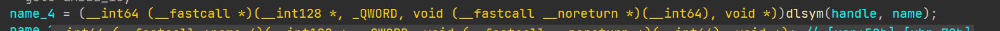
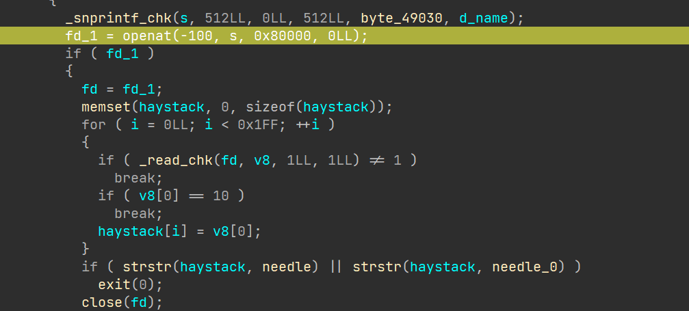
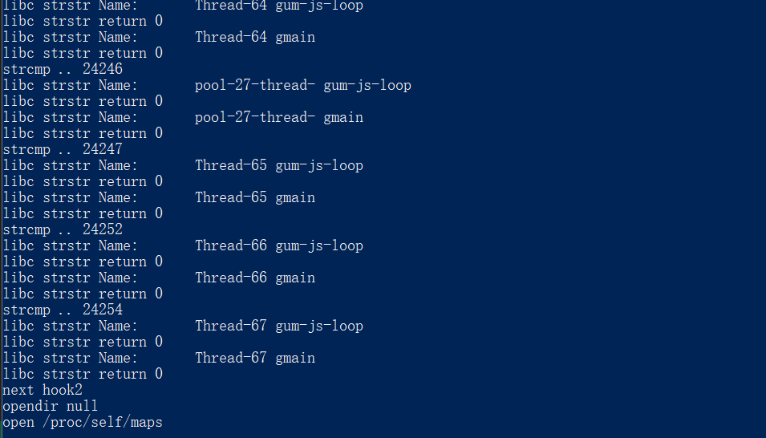

攻防世界总是在不断对抗，没有永恒的安全可言。
Frida 是安卓逆向分析的利器，注入检测一直是对抗的难题，学会解决这些问题才能成为一个真正的逆向工程师。
就原本的构建的 frida 而言，注入检测是十分简单的，从 /proc/self/maps ，从 /proc/self/stat ，都可以找到很多 Frida 注入特征。
社区开始想方设法屏蔽掉这些特征，比如 patch 源码，修改端口，但似乎都不能完全隐藏起来。
我个人日常使用的魔改 Frida 是 Florida，这里感谢一下作者，使用 GitHub Action 持续构建最新的 release。
对于 Frida 的检查我决定分为两种比较好一种是利用 /proc 接口的检测，一种是运行时检测。
# 运行时检测
对于 inline hook 在工作时一定会修改汇编代码，crc 快速校验 text 端是很有效的手段，但是会带来一定性能损失。
有没有更好的方法检测 frida 呢？有的。
Frida 可以同时 hook java 和 native 代码，其中的 java 代码 hook 是通过 hook libart 实现的，其中 art::ArtMethod::PrettyMethod 一定会被 frida hook 来使 java hook 正常工作。比起 crc 校验 so 的整个 text 段，不如直接 crc 校验 PrettyMethod 的函数前几个字节，可能有人会说，我怎么知道函数头原来的汇编是什么样的呢，我们其实可以把前几个字节保存到本地，然后每次启动一个线程去对比，如果数据不一致就说明被 frida 注入了（特别是用 attach 方式注入的），还有一种就是解析 PrettyMethod 汇编代码前几行，如果有 b 0x***** 类型的长跳转也说明被 frida 注入了。
还有一种运行时检测是堆栈检查，检查函数调用的堆栈信息，如果有异常情况也可以说明被 hook 了。
# /proc 接口的检测
基于 /proc 的检查被大厂 app 使用得更广泛，即使是魔改 Frida 也可以被检测出 Frida 特征，这里拿 BiliBili app 的 libmsaoaidsec.so 来说吧（不只是 b 站，这个 so 被非常多的 app 使用）。
这个 so 在加载时会调用 .init_proc 的初始化函数，其中一段代码

动态解析 libc 获得 pthread_create 的地址，调用这个函数创建了三个线程，循环检测 Frida 特征，其中一个线程在遍历/proc/self/task ，这个目录包含当前进程所有线程的运行信息，读取 /proc/self/task/tid/status 文件内容 
内容包含线程名称，通过 strstr 判断线程名称是不是包含gum-js-loop 和 gmain 来检测 frida，检测成功就会闪退。
魔改特征的
Florida 并没有通过这一检测，同时不只是 status，app 还可以检 /proc/self/task/tid/stat /proc/self/task/tid/sched /proc/self/task/tid/comm 等多个目录下的文件内容，都可以检测出 frida 的信息。最后还有个十分容易检测的特征是
/proc/self/net/unix , 被 frida 注入时会包含如下内容
0000000000000000: 00000003 00000000 00000000 0001 03 1741108 @/frida-e254654d-8ae6-4a50-9764-e54a961a9439 |
应该是 frida 用来远程通信的 unix 域套接字。
当然检测方法并不是这几种，也可以使用 /proc/self/maps 等其他方式进行检测，但是其他检测方案已经被魔改特征的 Florida 所隐藏了。
检测方法很多，反检测方法其实也可以很多。
有补充或者勘误的小伙伴可以在评论区留言。